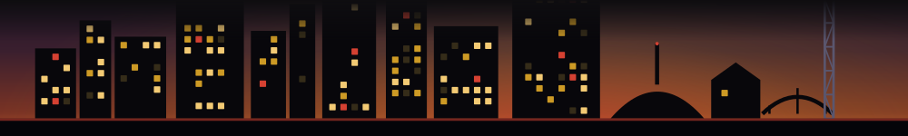

Five real Nashville windows opened and closed last week (Jul 21 - 27). Pop-ups, one-night dinners, limited runs. Tap the ones you actually caught. Be honest.
Every window here really happened, and really ended. Pulled from the Fleeting. discovery feed for the week of July 21, 2026. Fleeting. sends the next week's list every Thursday, before it is gone.